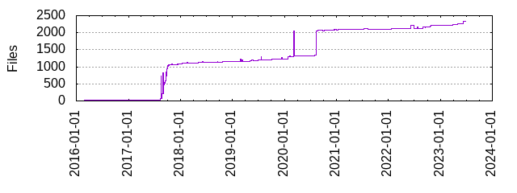

Files
- Total files
- 2328
- Total lines
- 273206
- Average file size
- 3998.15 bytes

| Extension | Files (%) | Lines (%) | Lines/file |
|---|
| 8 (0.34%) | 331 (0.12%) | 41 |
| bazel | 29 (1.25%) | 523 (0.19%) | 18 |
| bin | 3 (0.13%) | 0 (0.00%) | 0 |
| bzl | 2 (0.09%) | 167 (0.06%) | 83 |
| c | 1 (0.04%) | 684 (0.25%) | 684 |
| cpp | 1 (0.04%) | 108 (0.04%) | 108 |
| go | 82 (3.52%) | 260521 (95.36%) | 3177 |
| golden | 1410 (60.57%) | 7197 (2.63%) | 5 |
| h | 1 (0.04%) | 49 (0.02%) | 49 |
| in | 1 (0.04%) | 10 (0.00%) | 10 |
| json | 2 (0.09%) | 11 (0.00%) | 5 |
| jsonnet | 758 (32.56%) | 1487 (0.54%) | 1 |
| libsonnet | 1 (0.04%) | 7 (0.00%) | 7 |
| md | 3 (0.13%) | 355 (0.13%) | 118 |
| mod | 1 (0.04%) | 17 (0.01%) | 17 |
| py | 4 (0.17%) | 915 (0.33%) | 228 |
| sh | 7 (0.30%) | 120 (0.04%) | 17 |
| stderr | 4 (0.17%) | 47 (0.02%) | 11 |
| stdout | 1 (0.04%) | 35 (0.01%) | 35 |
| sum | 1 (0.04%) | 38 (0.01%) | 38 |
| txt | 2 (0.09%) | 1 (0.00%) | 0 |
| yaml | 1 (0.04%) | 15 (0.01%) | 15 |
| yml | 5 (0.21%) | 376 (0.14%) | 75 |